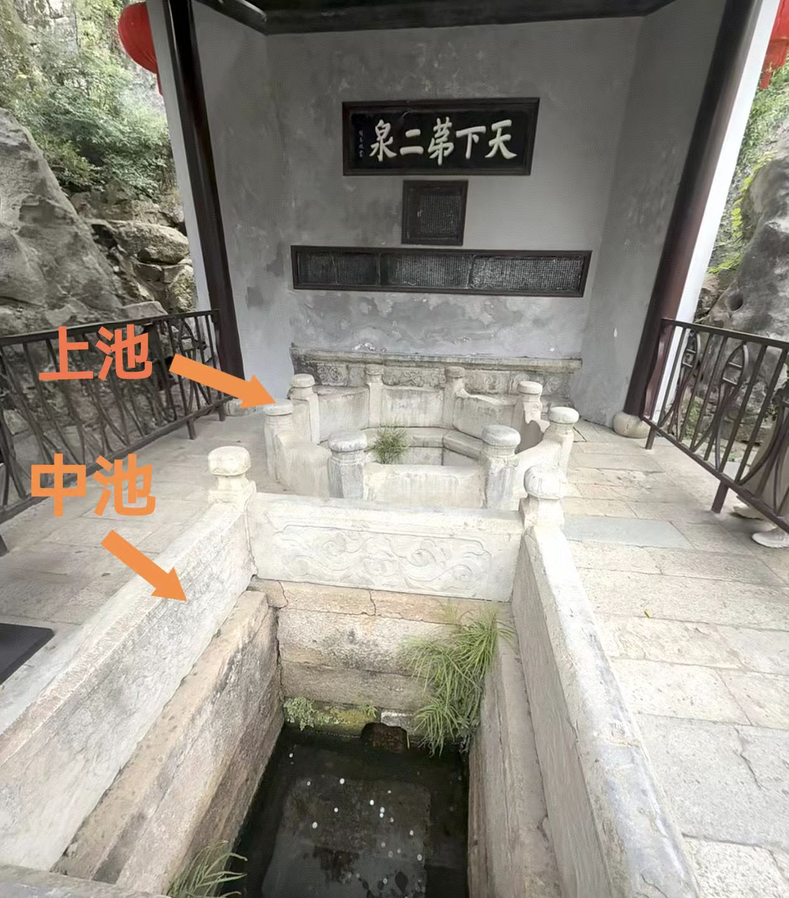
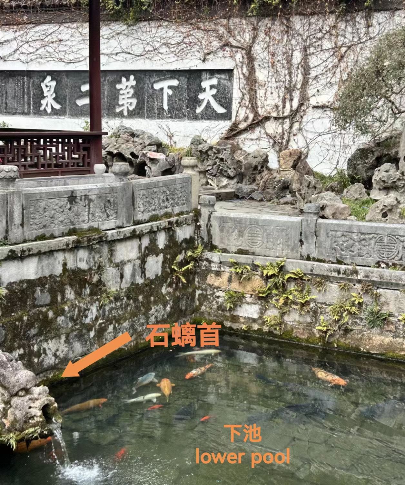
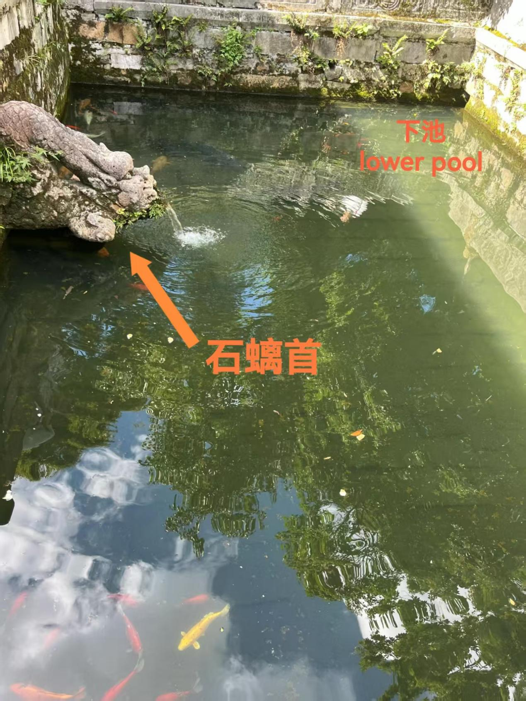
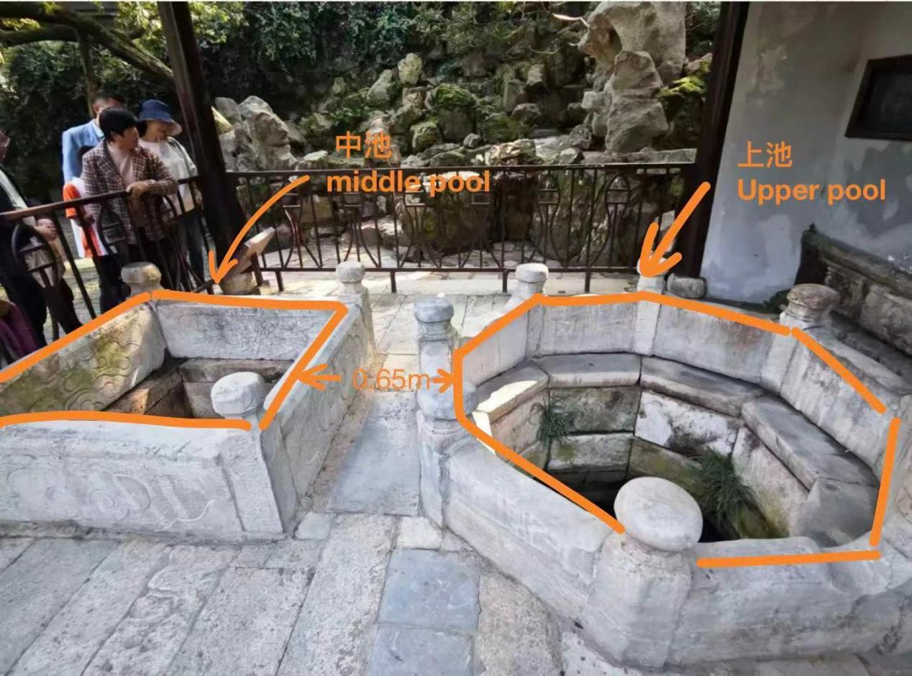
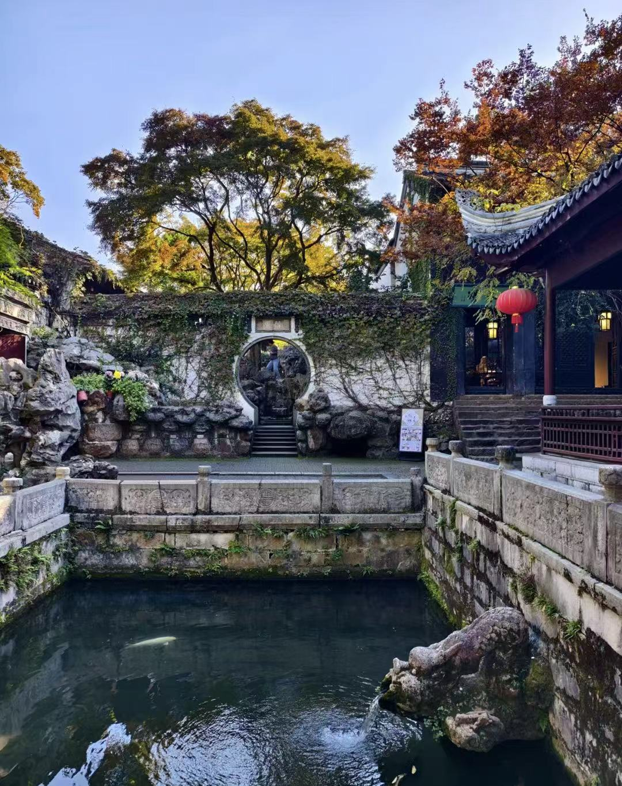
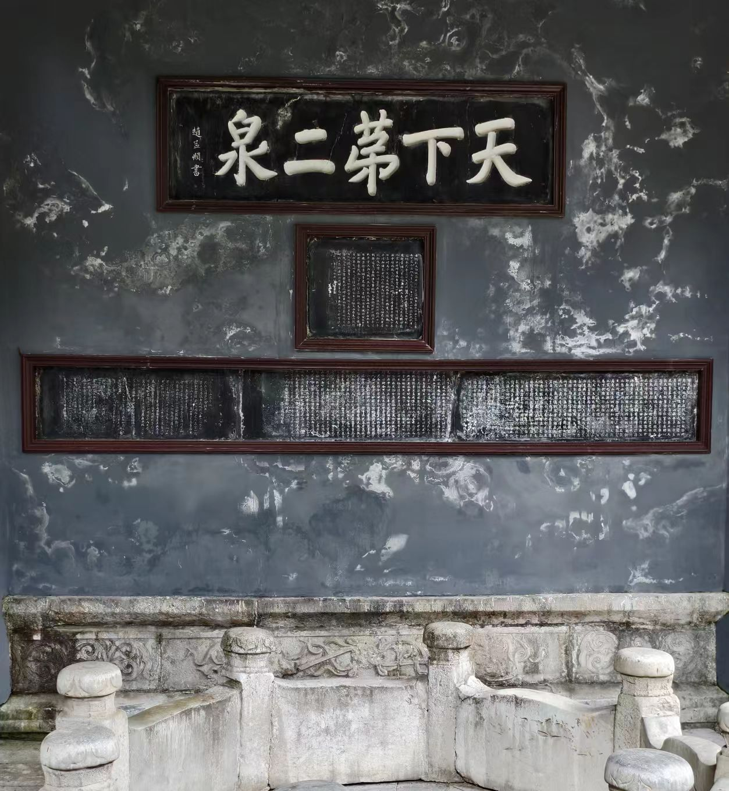
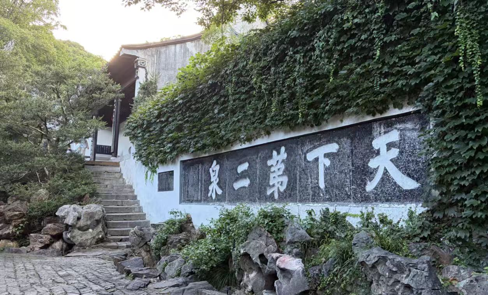
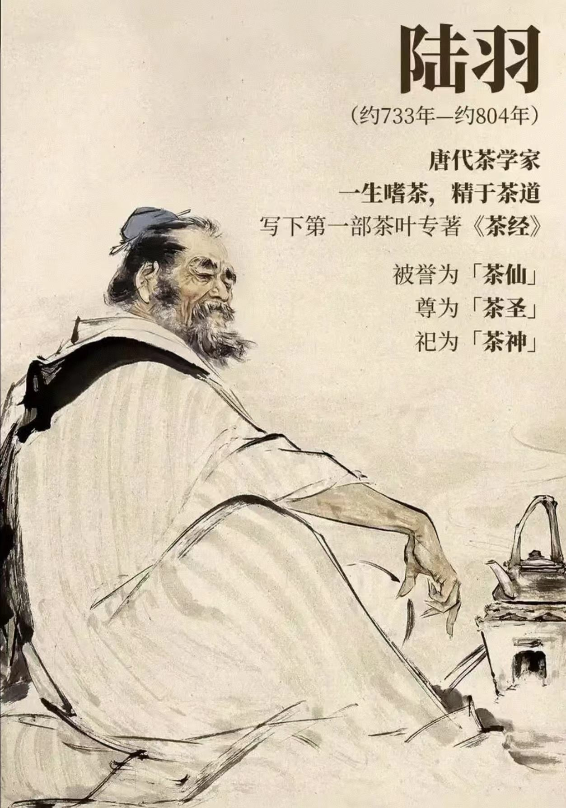
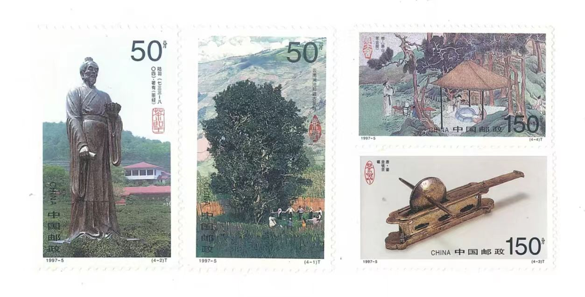
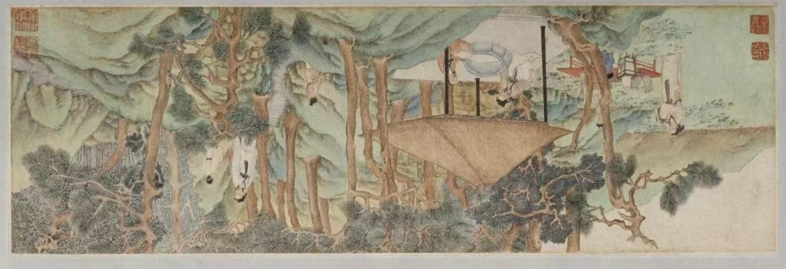

二泉简介 Brief Introduction to Huishan Spring
位于惠山东麓，庭院由泉、池、亭台、碑刻等组成，清雅古朴。2006年被列为全国重点文物保护单位。相传惠山泉是唐朝无锡县令敬澄派人所开凿，泉水含矿物质多，水色清纯，甘冽可口。唐代茶圣陆羽认为"惠山石泉第二"，从此惠山泉以"天下第二泉"的美名享誉四海。"二泉"分上、中、下三池，下池有一石螭首，构成"螭吻飞泉"胜景。唐代无锡籍著名诗人李绅赞其为"人间灵液"。宋朝时宋徽宗曾将二泉水列为贡品。苏东坡吟有"独携天上小团月，来试人间第二泉"的佳句。民间音乐家阿炳的一曲《二泉映月》，更使二泉妙不可言，名闻天下。
Located at the eastern foot of Huishan Mountain, the elegant and simple courtyard consists of springs, pools, pavilions, terraces and stone inscriptions. It was designated as a National Key Cultural Relic Protection Unit in 2006. According to legend, Huishan Spring was dug by workers dispatched by Jing Cheng, Magistrate of Wuxi County in the Tang Dynasty. Rich in minerals, its water is pure, clear and delicious. Lu Yu, the Tea Saint of Tang Dynasty, ranked “Huishan Stone‑Spring” second among all springs. Since then Huishan Spring has become famous as “The Second Best Spring under Heaven”. It is divided into upper, middle and lower pools. A stone chilong‑head in the lower pool creates the spectacular scene of “Chilong spouting spring water”. Li Shen, a distinguished poet born in Wuxi in Tang Dynasty, praised it as “Spiritual Liquid on Earth”. In the Song Dynasty, Emperor Huizong listed Huishan spring‑water as imperial tribute. Su Dongpo composed the well‑known verse: “Bring alone the small moon‑shaped tea cake from heaven, to taste the second spring on earth”. The folk musician Ah Bing’s erhu piece Moon over a Fountain made the spring world‑famous.
导览地图 Tour Map

地址：无锡惠山古镇内，天下第二泉景点区域 Address: Within Huishan Ancient Town scenic area, Wuxi
公告栏 Notice Board
开放时间 Opening Hours
08:00 — 17:30（以景区现场公告为准） 08:00 ~17:30 (subject to on‑site notices of the scenic area)
门票政策 Ticketing Regulations
包含于惠山古镇景区套票内，无单独小门票，优待政策参照景区官方公告。 Access is included in the combined ticket for Huishan Ancient Town Scenic Area. No individual entry ticket is available. Preferential admission policies shall be governed by the official announcements of the scenic area.
泉池基础概况 Basic Overview of Huishan Spring
2.1 二泉基础信息 Fundamental Information
- 地理位置： Geographic Location: 无锡惠山古镇 Huishan Ancient Town, Wuxi
- 开凿历史： Excavation History: 唐大历末年（779年）由无锡县令敬澄开凿 Dug in the late Dali reign of the Tang Dynasty (779 AD) by Jing Cheng, Magistrate of Wuxi County
2.2 三池结构详解 Detailed Explanation of the Three‑Pool Structure
天下第二泉的水系由上、中、下三池构成，三池的开凿年代、形制、功能各不相同，形成一个完整的阶梯式水景体系。 The water‑system of Huishan Spring consists of upper, middle and lower pools. They differ in excavation era, form and function, forming an integrated stepped waterscape system.
上池（泉源之池） Upper Pool (Source Pool)
形制：Form: 呈八角形，边长0.8米，深1.94米，围以八角形青石井栏。八角形暗合“天圆”之象，与中池的方形形成“天圆地方”的空间哲学。 Octagonal, with a side length of 0.8 m and depth of 1.94 m, enclosed by an octagonal bluestone well‑railing. Its octagonal shape embodies the symbolism of “heaven being round”, creating the spatial philosophy of “heaven round, earth square” together with the square middle pool.
水质特征：Water Quality Features: 为泉源所在，水质最佳。水色透明、甘冽可口，历史上以表面张力大、满杯隆起数毫米而不溢著称。 The spring source with superior water quality. Water is transparent, sweet and refreshing. Historically it was famous for strong surface tension: water could mound several millimeters above cup‑rim without overflowing.

中池（过渡之池） Middle Pool (Transition Pool)
形制：Form: 呈正方形，边长1.4米，深1米，围以方形石栏。方形象征“地方”，与上池八角形构成“天圆地方”格局。 Square‑shaped, with side length 1.4 m and depth 1 m, surrounded by square stone railings. The square form symbolizes “earth being square”, forming the “heaven‑round‑earth‑square” pattern paired with the octagonal upper pool.
水系关系：Hydraulic Connection: 两池相距仅0.65米，池壁上方凿有水口相通，泉水由上池流入中池。中池水体清淡，水质仅次于上池。 The two pools are merely 0.65 m apart. A water spout is chiseled on upper pool‑wall for connection; spring‑water flows from upper pool into middle pool. Water in middle pool is clear, its quality second only to upper‑pool water.
下池（蓄水之池） Lower Pool (Water Storage Pool)
形制：Form: 呈长方形，长8.6米、宽5.75米，深约0.33米，为三池中规模最大者，实兼具蓄水与观鱼功能。 Rectangular, 8.6 m long, 5.75 m wide and about 0.33 m deep. It is the largest among three pools, serving both water‑storage and ornamental‑fish viewing.
石螭首（关键构件）：Stone Chilong‑Head (Key Structural Component): 下池西侧池壁嵌有明代弘治十四年（1501年）邑人杨理雕刻的石螭首（俗称石龙头）。泉水经暗渠由中池引至螭口，再从螭口吐入下池，取“水不在深，有龙则灵”之意。 Embedded on the west wall of lower pool is a stone chilong‑head carved by local resident Yang Li in the 14th year of Hongzhi reign of Ming Dynasty (1501 AD). Spring‑water flows through hidden culvert from middle‑pool to the dragon‑mouth and spouts down into lower pool, echoing the famous line “Though the water be not deep, it gains spirit with a dragon dwelling within”.


2.3 泉亭解读 Interpretation of the Spring Pavilion
- 水文特征：惠山泉属裂隙泉，经“千岩涤滤、松根浸润”，水质甘冽清爽。上池深1.94米，围八角石栏；中池深1米，围方形石栏，两池相距0.65米，上凿水口相通。 Hydrological Characteristics: Huishan Spring is a fissure spring. Filtered through thousands of rocks and nourished by pine roots, its water tastes sweet and crisp. Upper‑pool depth 1.94 m with octagonal stone railing; middle‑pool depth 1 m with square stone railing. The two pools stand 0.65 m apart, connected by a chiselled water spout.

- “天圆地方”的空间哲学：上池八角形（天）、中池方形（地），下池开凿于北宋明道年间。下池螭首吐水设计，取“水不在深，有龙则灵”之意。 Spatial Philosophy of “Heaven Round, Earth Square”: Octagonal upper‑pool represents heaven; square middle‑pool represents earth. The lower pool was excavated in the Ming‑dao reign of Northern‑Song Dynasty. The design of water spouting from chilong‑head embodies the notion: “Though the water be not deep, it gains spirit with a dragon dwelling within”.
- 庭院布局：中轴线上二泉亭、漪澜堂与泉池结合自然山势布置，缀以太湖石峰。20世纪90年代泉水自然断流，现以人工注水维持。 Courtyard Layout: Along the central axis, the Second‑Spring Pavilion, Yilan Hall and spring‑pools are laid out following natural mountain terrain, decorated with Taihu rock peaks. Natural spring‑flow dried up in the 1990s; nowadays artificial water‑injection maintains the scene.

2.4 碑刻解读 Interpretation of Stone Inscriptions
- 赵孟頫题匾：元代赵孟頫楷书“天下第二泉”五字，原木匾明末流失，清嘉庆八年摹刻于石后重置于泉亭。碑高25厘米，长37厘米。 Zhao Mengfu’s Horizontal Tablet: The regular‑script characters “The Second Best Spring under Heaven” written by Zhao Mengfu of Yuan Dynasty. The original wooden tablet was lost at the end of Ming Dynasty. In the 8th year of Jia‑qing reign of Qing Dynasty, it was copied and carved on stone and reinstalled in the spring pavilion. The stele is 25 cm in height and 37 cm in length.

- 王澍石刻：清雍正六年（1728年），王澍重书“天下第二泉”刻于五块青石，总长650厘米，现存二泉亭北侧粉墙。 Wang Shu’s Stone Carving: In the 6th year of Yong‑zheng reign of Qing Dynasty (1728 AD), Wang Shu recopied the inscription “The Second Best Spring under Heaven” and carved it on five bluestone slabs with a total length of 650 cm, now preserved on the white wall north of the Second‑Spring Pavilion.

- 轶闻钩沉：王澍所书扬州“天下第五泉”系从惠山“二”字改刻而来，《扬州画舫录》载其事，足见二泉题刻的影响力。 Anecdote: The inscription “The Fifth Spring under Heaven” in Yangzhou, also written by Wang Shu, was revised from the character “Second” of Huishan’s inscription, as recorded in Records of the Painted Pleasure‑Boats of Yangzhou. This shows the profound influence of Huishan Spring inscriptions.
历史人文典故 Historical and Cultural Allusions
3.1 名号由来 Origin of the Name
陆羽（733–804，茶圣）在品评天下之水味醇质时共选出前二十，称“常州无锡县惠山石泉第二”。故号称“天下第二泉”，又称“陆子泉”。 Lu Yu (733‑804, known as the Saint of Tea) selected top‑twenty springs when evaluating water quality across the country, rating “Huishan Stone‑Spring, Wuxi County, Changzhou” as No. 2. Therefore it is named “The Second Best Spring under Heaven”, also known as “Luzi Spring”.

3.2 名人诗词与轶事 Celebrity Poetry and Anecdotes
①唐代著名《悯农》诗人李绅（772—846年）字公垂，无锡人，唐宪宗元和年进士，少年时常来惠山读书，饮此茗泉，认为它“乃人间灵液、清鉴肌骨，漱开神虑。茶得此水，皆尽芳味也。” ① Li Shen (772‑846), famous Tang‑Dynasty poet author of Sympathizing with Peasants, was a native of Wuxi. In his youth he often studied at Huishan and drank spring‑water. He commented: “This is spiritual liquid on earth; it cleanses bones and refreshes mind. Tea brewed with this water releases all its fine aroma.”
晴沙见底空无色，青石潜流暗有声。微动竹风涵淅沥，细浮松月透轻盈。
桂凝秋露添灵液，茗折春芽泛玉英。应是梵居连洞府，浴池今化醴泉清。 [Poem of Li Shen]
Clear sand reveals the bottom, water colourless and pure;
Beneath blue stones hidden current murmurs low.
Bamboo‑wind stirs light drizzle;
Moonlight through pines drifts soft and slim.
Osmanthus autumn dew enriches this spiritual liquid;
Spring tea buds float like jade blossoms.
It must connect with the fairy grotto of the Buddhist abode;
The old bathing pool has turned into sweet holy spring.
北宋大文豪苏东坡于神宗熙宁七年（1074年）携小龙团来试二泉水，品茗后认为它是“乳水”、“色味两奇绝”，留下千古名句：独携天上小团月，来试人间第二泉。 Su Dong‑po, great literary giant of Northern‑Song Dynasty, carried fine dragon‑ball tea cakes to taste Huishan spring‑water in 1074 AD. He praised it as “milky‑water”, “wonderful both in colour and flavour”, leaving the immortal verse: “Bring alone the full‑moon‑shaped tea cake from heaven, to taste the second spring on earth.”
②二十世纪五十年代中国江南无锡街头流浪瞎眼艺人阿炳创作演奏的二胡曲《二泉映月》。 ② In the 1950s, the blind folk artist Ah Bing created and performed the erhu piece Moon over a Fountain on the streets of Wuxi in southern China.
3.3 皇家与民间印迹 Royal and Folk Imprints
- 北宋徽宗政和年间（1111—1118年）列为贡品 Listed as imperial tribute during the Zheng‑he reign of Emperor Huizong of Northern‑Song Dynasty (1111‑1118 AD).
- 清代康熙、乾隆二帝南巡时每次必临二泉品茗。并留下许多御碑、匾额赞美惠山之湖光山色和二泉灵液 Emperors Kangxi and Qianlong of Qing Dynasty would always visit Huishan Spring for tea‑tasting during their southern inspection tours, leaving many imperial steles and horizontal boards praising Huishan’s scenery and the spiritual spring‑water.
- 1997年4月8日，邮电部发行《茶》邮票一套，其中“茶会”图案系明代文征明绘画《惠山茶会图》的局部，记录清明时节，画家偕好友在无锡西郊惠山游春煮茶品茗赋诗吟诵的情景。 On April 8 1997, the Ministry of Posts and Telecommunications issued a set of “Tea” stamps. The “Tea‑Gathering” motif was excerpted from Wen Zheng‑ming’s painting Huishan Tea Gathering, recording the scene of the painter and his friends enjoying spring outings, boiling tea and composing poems at Huishan Mountain west of Wuxi.

3.4 “试第二泉”如何演变为文人身份认同的文化仪式？ How Did “Tasting the Second Spring” Evolve into a Cultural Ritual of Literati Identity?
- 经典诗句：苏轼“独携天上小团月，来试人间第二泉”（1073年）成为最著名的“广告语”，后世反复引用。 Canonical Verse: Su Shi’s line “Bring alone the full‑moon‑shaped tea cake from the sky, to taste the second spring on earth” (1073 AD) serves as its most renowned literary tagline, quoted repeatedly by posterity.
- 茶会图卷：明正德十三年（1518年），文徵明与友惠山茶会，作《惠山茶会图》，成为茶文化史经典图像。图中二泉亭为茅亭构造，与现存清代建筑不同。 Tea‑Gathering Scroll: In the 13th year of Zheng‑de reign of Ming Dynasty (1518 AD), Wen Zhengming held a tea‑gathering at Huishan together with his friends and painted Huishan Tea Gathering, an iconic artwork in tea‑culture history. The Second‑Spring Pavilion shown in the painting is a thatched hut, different from the existing Qing‑Dynasty building.

泉茶文化专题 Special Topics on Tea Culture
4.1 泉茶适配原理 Spring‑Tea Adaptation Principle
惠山泉水质清冽，矿物质含量适中，低杂质，适合冲泡各类名茶，可激发茶叶香气与滋味。 Huishan spring‑water is clear and fresh, with moderate mineral content and low impurities. It suits brewing all kinds of famous teas and can fully bring out tea aroma and taste.
4.2 历代饮茶风尚 Tea‑Drinking Fashion in Past Dynasties
唐代煎茶、宋代点茶、明清泡茶，千百年来文人雅士汇聚二泉，以泉水煮茶，形成独特的品泉文化。 Tang‑Dynasty fried‑tea, Song‑Dynasty whisked‑tea, Ming‑Qing steeped‑tea. For thousands of years literati gathered by Huishan Spring to boil tea with spring‑water, forming unique spring‑tasting culture.
4.3 当代茶文化活动 Contemporary Tea‑Culture Activities
品泉雅集、茶文化讲座、传统点茶体验，传承二泉千年茶文化。 Spring‑tasting salons, tea‑culture lectures, traditional whisked‑tea experiences, inheriting thousand‑year‑old tea culture of Huishan Spring.
4.4 景区相关活动 Scenic‑Spot Related Activities
惠山古镇四季茶文化主题活动，结合二泉历史开展研学、写生、雅集活动。 Four‑season tea‑culture themed events of Huishan Ancient‑Town. Study‑tour, sketching and salon activities held combined with Huishan Spring history.